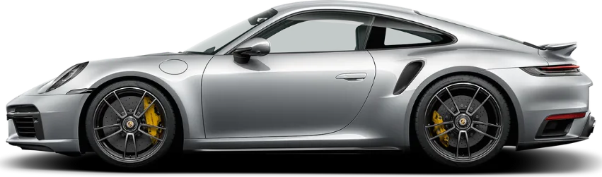

Único Dono
Porsche 911 Turbo S Tipo 992
Linhas fluidas da família 911, caixas de roda traseiras alargadas e freios de cerâmica com pinças amarelas.
- 650 cvpotência
- 2,7 s0 a 100 km/h
- 330 km/hvelocidade máx.

Único Dono
Linhas fluidas da família 911, caixas de roda traseiras alargadas e freios de cerâmica com pinças amarelas.